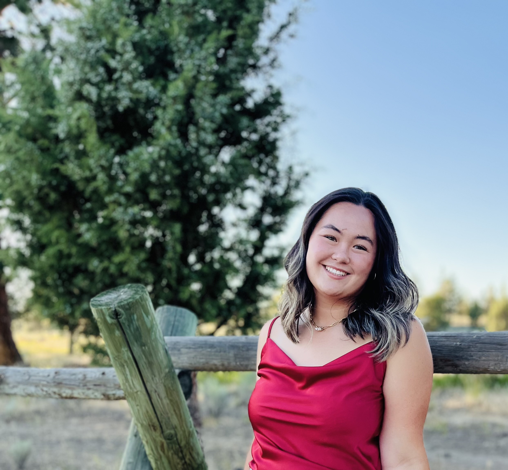

Hi! My name is Payton Freitag and I am currently a undergrad student at Gonzaga University majoring in the Nursing Program with hopes of becomeing a nurse in the NICU or pediatrics. I want to become a nurse because I find purpose in helping others and I love that patient healthcare provider interaction that nursing allows for. I want to help create positive change and I feel like this is the best profession in which my strengths can shine through.
Active Culture Bend- Server (June 2026- Present)
Chick-Fil-A- Team Member (June 2025- Present)
Juniper Preserve Resort- Food & Beverage Employee (May 2023- September 2023)
Babysitting- (2021- Present)
My favorite thing to do is spend time with my family, whether it be going on a hike or Friday game nights together. I have one older sister named Alana and two exchange student that we hosted when I was younger that I now consider my sibilings. Alex from Hong Hong and Cindy Lou from Taiwan. My Parents David and Dianna are from the coast of Oregon and moved to bend in 2001 before I was born. I am so grateful for how close we all are! Being the younger sibiling I always got the hand down clothes and felt like I was living in the shadow of my sister. Now I am developing a stong sense of self and I am excited to get to determine where my life goes next.